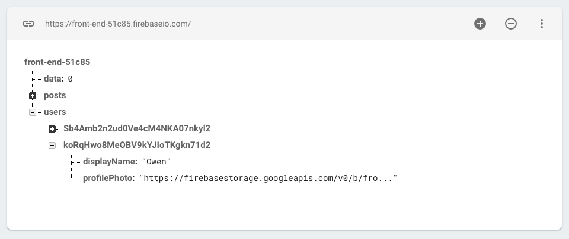

The Firebase Database can only save basic data like numbers, strings and booleans. This is great for storing user posts, passwords and likes.
If we want to save files like images or videos we need to use the Storage area in Firebase.
To set up Storage, start by clicking on the Storage link in the Firebase menu.

You will be prompted to "Get Started".
Then you will approve the default security rules.
This will create an empty storage folder where we can add media files.

Profile
We're going to start by giving our users the ability to add a Profile image. To do this we need to upload an image to Storage and then get the URL where the image is stored and save it in the database with the user.
<div id="profile">
<input id="profile-name">
<img id="profile-photo">
<textarea id="bio" placeholder="Add your bio"></textarea>
<div id="add-photo">
<p>Add a profile image:</p>
<input id="profile-photo-file" type="file" name="profile-img" accept="image/gif, image/jpeg, image/png">
<button id="submit-photo">Submit Image</button>
</div>
</div>
Next, let's update the js/profile.js.
Upload image
To upload the image, we need listen for when the user click the submit image button and then grab the file and put it in Firebase storage.
Once in storage, we can grab the URL for the image to add to the database and user account.
After initializing a new Storage bucket, the config values for the Firebase app will chance. Go to settings and copy the new config and replace that in the <head> section of profile.html.
Then add the module for storage.
<script src="https://www.gstatic.com/firebasejs/5.9.1/firebase-app.js"></script>
<script src="https://www.gstatic.com/firebasejs/5.9.1/firebase-auth.js"></script>
<script src="https://www.gstatic.com/firebasejs/5.9.1/firebase-database.js"></script>
<script src="https://www.gstatic.com/firebasejs/5.9.1/firebase-storage.js"></script>
In js/profile.js, first listen for the user click.
const submitButton = document.getElementById('submit-image');
submitButton.addEventListener('click', function() {
// get file
// upload file
});
Get the file from the HTML input.
const file = document.getElementById('profile-image-file').files[0];
// check file exists
if (file) {
// upload
}
The storage reference is structured the same way as the firebase database reference.
const storage = firebase.storage();
const user = firebase.auth().currentUser;
const ref = storage.ref('users').child(user.uid).child('profile-image');
const promise = ref.put(file);
With the filePromise we can add the image URL and use it to update the database and user account.
To get the image URL we need to use another method that returns a promise, getDownloadURL(). To do this we can use a common structure with Promises. We return the result of image.ref.getDownloadURL() and add another .then() to deal with the new Promise created.
promise.then(function(image) {
return image.ref.getDownloadURL();
}).then(updatePhoto);
function updatePhoto(url) {
const user = firebase.auth().currentUser
user.updateProfile({ url: url });
document.getElementById('profile-image').src = url;
document.getElementById('add-image').style.display = 'none';
firebase.database().ref('users').child(user.uid).update({ imageURL: url });
}
You should see the image appear in the Storage files.

And the URL will be added to the Database.

Display logged in user
Now we can use the image for the logged in user.
First add an id for the image in the HTML.
<div id="profile">
<img id="edit-profile-image" alt="">
<button id="edit-profile">Edit Profile</button>
</div>
Then add the edit js/auth.js to display the user image from the database.
userRef.on('value', function(snapshot) {
const userInfo = snapshot.val();
displayName.textContent = "Welcome, " + userInfo.displayName;
// check for image and then add
if (userInfo.imageURL) {
document.getElementById('edit-profile-image').src = userInfo.imageURL;
}
});
Displaying the user image next to posts
These reference will allow us to display the user photo when they're logged in and next to the posts that they write.
We can create an image in the createPost function.
First update the users section to save all of the info from the database.
// change
users[snapshot.key] = snapshot.val().displayName;
// to this
users[snapshot.key] = snapshot.val();
Then update the line adding the user displayName to the post.
// change
const author = createElement('author', users[data.uid]);
// to
const author = createElement('author', users[data.uid].displayName);
Now we can reference the imageURL as well as the displayName.
function createPost(data) {
// ...
posts.insertBefore(post, posts.firstElementChild);
if (users[data.uid].imageURL) {
const userImage = new Image();
userImage.src = users[data.uid].imageURL;
userImage.classList.add('user-image');
post.appendChild(userImage);
}
}
The HTML generated for each post will now include a user image if one is available.
Add styling in posts.css to include the image in the post layout. This might be a good play to try using CSS Grid or Flexbox to change the layout of the post.